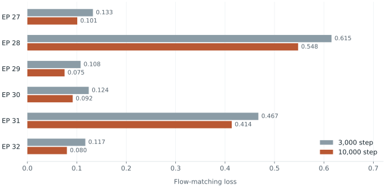

학습 입력·정규화 관리
승인 목록, 선택한 episode, train/eval 분할과 정규화 조건을 학습 receipt에 기록한다. 정규화 통계는 TRAIN 부분에서만 계산하고 checkpoint의 processor와 함께 보존한다.
실제 학습에는 수집한 26개 episode를 사용했다. 20개는 학습에, 나머지 6개는 개발용 평가에 사용하며 평가 데이터는 정규화 통계 계산에서 제외한다.
학습 실험
학습 길이에 따른
오프라인 평가 비교
같은 데이터와 평가 episode에서 3,000-step·10,000-step 학습 설정을 비교했다. 학습 길이에 따라 warmup·decay도 달라지므로 순수한 학습량 비교와는 구분한다.

Frame 수로 가중한 평균 loss는 0.2585 → 0.2164. 같은 4,644개 평가 frame에서 계산한 값이다. 위 그림은 여섯 episode의 결과이다.
episode별 수치와 비교 조건
| Episode | 평가 frame | 3,000 step | 10,000 step |
|---|---|---|---|
| EP 27 | 633 | 0.132649 | 0.100963 |
| EP 28 | 632 | 0.615368 | 0.547819 |
| EP 29 | 940 | 0.107717 | 0.075258 |
| EP 30 | 966 | 0.124169 | 0.091736 |
| EP 31 | 953 | 0.467385 | 0.413534 |
| EP 32 | 520 | 0.117254 | 0.079974 |
두 실행의 데이터·평가 episode·정규화 조건은 동일하다. 실행별 승인 범위가 달라 split digest는 다르며, 비교 시 승인 결속을 제외한 실제 분할 내용을 대조했다.
원래 비교와 보고서 ↗반복 사용한 개발용 heldout의 결과이다. 독립 최종 시험, 통계적 유의성, 실물 성공률의 근거와는 구분한다.
동작 단위별 예측 오차
기존 Rollout 평가 경로에서 저장 관측의 예측 동작을 checkpoint의 postprocessor로 복원해 rad·m 단위로 비교했다. 각 episode의 세 시점과 두 seed를 사용하고, 현재 관측 상태를 유지하는 참조와 함께 평가한다.
| 축 / 단위 | 상태 유지 참조 | 3,000 step | 10,000 step |
|---|
축·episode별 결과에는 차이가 있다. J6은 seed 0의 합산 MAE가 감소했지만 RMSE는 증가했다. Episode 31의 J6 MAE는 두 seed에서 모두 증가했다. 거의 움직이지 않는 J5의 작은 오차 차이도 별도로 확인한다.
상태 유지 참조보다 오차가 큰 축도 있다. 이 참조는 관측 상태를 유지하는 사후 진단 기준이며, 실제 실행용 정책이나 학습된 제어기가 아니다.
전체 합산은 seed마다 18개 관측의 유효 동작 900 step을 사용한다. 연속 step은 독립적인 실물 시험 횟수가 아니다. 관절 rad와 그리퍼 m는 단위가 달라 합산하지 않는다.